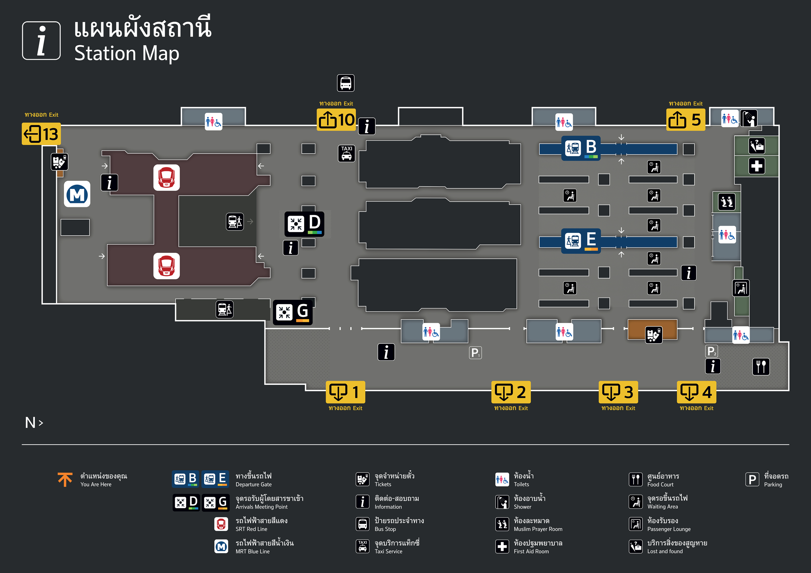
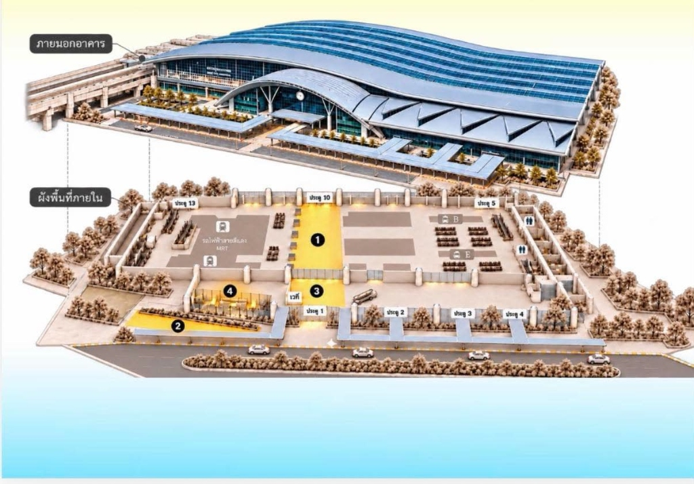
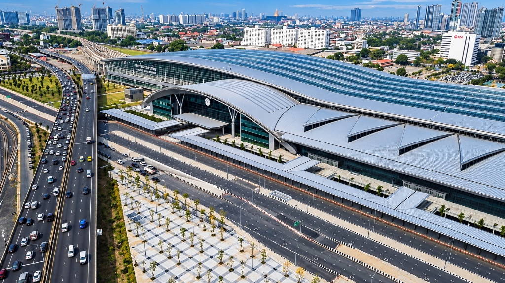

1. แผนผังสถานี (Station Map 2D): แสดงตำแหน่งประตูทางออก 1, 2, 3, 4, 5, 10, 13, ทางขึ้นรถไฟ B/E, จุดนัดพบ D/G, รถไฟฟ้าสายสีแดง, MRT สายสีน้ำเงิน และห้องบริการต่างๆ

2. ผังจำลอง 3D แยกชั้น (ภายนอกอาคาร & ผังพื้นที่ภายใน): ต้นแบบมุมมอง Exploded View แสดงหลังคาโค้งด้านบนและผังพื้นที่ภายใน โซน 1, 2, 3 (เวที), 4 ด้านล่าง

3. มุมมองภายนอกด้านหน้า (ทิศตะวันออก): ซุ้มโค้งนาฬิกาประจำสถานี หลังคาช่องแสงสามเหลี่ยม 4 ช่อง และหลังคาทางเดินเชื่อมจุดรับ-ส่ง (ประตู 1-4)
4. มุมมองภายนอกและรางรถไฟยกระดับ: ป้ายชื่อสถานีกลางกรุงเทพอภิวัฒน์ หลังคาโค้งลูกคลื่นสีเงิน และโครงสร้างรางรถไฟยกระดับ